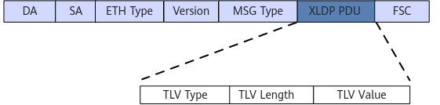
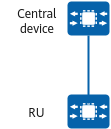
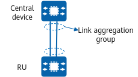
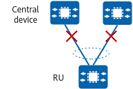
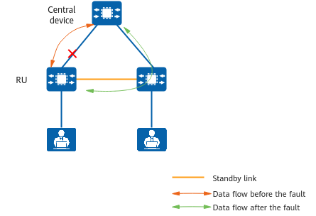
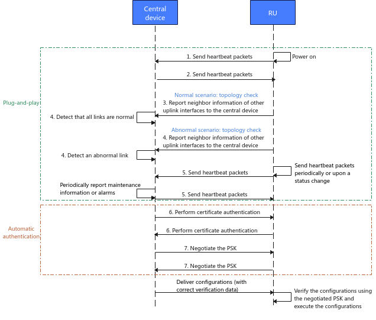

Basic Concepts
A central device manages RUs, forwards traffic from RUs, and provides functions such as RU information query and configuration delivery.
An RU connects to a downstream interface of the central device and is used for interface expansion. RUs are connected to terminals and APs, and forward service traffic to the central device. RUs can connect to power adapters for power supply or use the PoE power supply of the central device. RUs also provide PoE power supply to access terminals.
The eXtremely Lean Discovery Protocol (XLDP) is a management control protocol used between the central device and RUs, enabling the central device to centrally manage and perform O&M for RUs. Figure 1 shows the format of an XLDP packet, and Table 1 describes its fields.
Figure 1 XLDP packet format
Table 1 Fields in an XLDP packetField
|
Length (Byte)
|
Description
|
|---|
DA
|
6
|
Destination MAC address, which is the protocol multicast address 0x0180-C200-000F.
|
SA
|
6
|
Source MAC address, which is the unicast MAC address of an interface on the transmit end. If the interface has no MAC address, the bridge MAC address of the device is used.
|
ETH Type
|
2
|
The value is fixed to 0x88DD.
|
Version
|
1
|
Version information: 0x1.
|
MSG Type
|
1
|
Protocol type:
0x01: Heartbeat packet.
0x03: Channel ACK packet.
0xFF: Channel packet.
|
XLDP PDU
|
Variable
|
XLDP packet information.
|
FCS
|
4
|
Verification field.
|
TLV Type
|
7 bits
|
Type of the TLV.
|
TLV Length
|
9 bits
|
Length of the TLV.
|
TLV Value
|
0-511 bytes
|
TLV value.
|
Setup Scenario
RUs are plug-and-play, facilitating networking. To connect the central device and RUs, you can select the cable type that best suits your needs, choosing from network cables, optical fibers, and optical/electrical hybrid cables. Optical/electrical hybrid cables and network cables will enable the central device to remotely supply power to RUs, ensuring network continuity in case of power failures.
The uplink ports of RUs can be connected to the central device through a single link, active and standby links, or dual links.
- If there is only one link, as shown in Figure 2, the network is successfully deployed after the central device and RU are powered on.
Figure 2 Intelligent simplified campus network with a single link
- In the case of dual links, as shown in Figure 3, the two links are connected to the same central device and RU. Two uplink ports on the RU automatically form a link aggregation group, whereas the two ports on the central device need to be manually configured to form a link aggregation group.
Figure 3 Intelligent simplified campus network with dual links
As shown in Figure 4, in dual-link scenarios, the central device may not set up a link aggregation group. In these cases, the central device will automatically detect the fault, triggering an alarm and Error-Down event.
Figure 4 Abnormal dual-link scenario
- As shown in Figure 5, two RUs are connected to the same central device through a single link, and the uplink ports of the two RUs are connected through a cable, forming a standby link. When the link between an RU and the central device fails, traffic is switched to the standby link, ensuring link-level reliability.
Figure 5 Intelligent simplified campus network with active and standby links
RU Onboarding
Figure 6 shows how a central device negotiates with an RU for onboarding.
Figure 6 RU onboarding process
- After the RU is powered on, it periodically sends heartbeat packets to the central device through its uplink ports.
- After receiving heartbeat packets from the RU, the central device starts the RU onboarding process and periodically sends heartbeat packets to the RU.
- The RU sends the system MAC address delivered by the central device to the central device.
- The central device compares the system MAC address received from the RU with its own system MAC address.
- The central device considers the links normal if the system MAC addresses match and its local interfaces connecting to the RU join the same Eth-Trunk interface. Then, the RU is onboarded on the central device.
- The central device considers the links abnormal if the system MAC addresses do not match or its local interfaces connecting to the RU are not in the same Eth-Trunk interface. It then sends an alarm and configures its local interfaces to enter the Error-Down state.
- The RU periodically reports its information to the central device, including basic device information, basic interface information, optical module information, interface statistics, device PoE information, and interface PoE information. The information reported by the RU can be checked on the central device. The central device periodically sends heartbeat packets to the RU. At this stage, the central device cannot deliver configurations to the RU.
- The central device sends a packet carrying its device certificate to the RU. Upon receipt, the RU uses the local root certificate for certificate authentication. After the authentication is successful, the RU negotiates an encryption key with the central device.
- After key negotiation succeeds, the central device can deliver configurations to the RU, and the RU verifies the validity of the configuration packets using the negotiated key. The authentication mechanism prevents RUs from executing invalid configurations sent from an attack source.
After the RU goes online and the key is successfully negotiated, the central device can manage the RU. You can then centrally manage the RUs through the central device, including viewing basic information, delivering configurations, and upgrading firmware. An RU not managed by the central device can be used as a Layer 2 device independently. However, the uplink ports of the RU can only connect to network devices, instead of terminals.